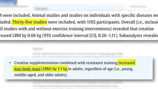
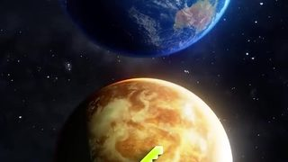
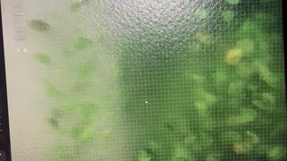

点封面在页面里播放（Vimeo / YouTube / X 需要代理；Vimeo 若没自动开始，再点一下播放键）。觉得好就点「喜欢」，有想法就写在下面的框里保存，我每天出日报前会读，存进偏好和审美库；会多找同类，但每天仍保持类型分散。
目录 01 sticker peel OKURI（贴纸撕掉）02 WebGL fold experiment（滚动展开的三折信纸）03 86 个零件拼出一台四缸发动机（three.js）04 Fluo 发布片（Write messy. Send perfect.）05 Beauty in Sequence（60 部电影拼成一分钟，补课 2025）06 flip to tip v2（按住按钮抛硬币打赏）07 iCloud+ 云朵循环（Apple，60fps 转发）08 How Quiet Are the World's Quietest Rooms?09 Apple Pay 广告「The fast, easy, and secure way to pay」10 Delta Cafés 网站（Awwwards 11-13 当日最佳）－ 差一点进的 3 条拆 本周最值得学：Kernel & Chai 发动机拼装
01 UI动效 转场
sticker peel OKURI（贴纸撕掉）
60fps（@60fpsdesign）/ @seek____null · 11-09 日报 · X 11-07 【看过画面（抽帧）】
3 秒已下载，抽 12 帧看过
好在哪 约 3 秒：酒红底的 App 里，一张蓝色贴纸被从一角撕起、翻面、飞出屏幕，最后留下一枚黄色小贴纸。背面是镜像字，翻面那一下做完整了。比一般「贴纸滑走」好在它真的像从界面上揭下来，不是一张贴图平移可借 你之前点过贴纸、还写过以后会用：把撕起一角当成换场，代替淡入淡出；翻面时露出镜像背面，撕完留一枚小贴当「还在这」
展开全文
02 代码动画 转场 3D质感
WebGL fold experiment（滚动展开的三折信纸）
Codegrid（@codegridweb） · 11-10 日报 · X 11-08 【看过视频】（完整看过约 38 秒）
38.4 秒完整看过
字体未识别（衬线体）
好在哪 约 38 秒网页录屏：深色底上一行衬线字「A Note Awaits」，往下滚，一张折好的纸从底部进来，像三折信一样一片片翻开铺成信，再滚出去变成「Delivered」；往回滚就倒放折回去。折痕和纸面颗粒都是 GLSL 手写。比一般「展开面板」好在纸是有厚度的，翻起的那片会给下层投一点影，铺平后还留着两道折痕可借 做「信息展开/收起」：一张纸分成上下两片错开翻开，进度直接绑在滚动或帧上。Three.js 里用平面加顶点动画就能做
展开全文
03 代码动画 3D质感
86 个零件拼出一台四缸发动机（three.js）
Shubham · Kernel & Chai（@KernelChai） · 11-11 日报 · X 11-09 【看过视频】（完整看过 26.3 秒）
X 26 秒已下载，抽 12 帧加 32 帧密抽看过
作者说还没上贴图，材质是纯色金属
字体未识别（标题无衬线，计数是等宽体）
好在哪 约 26 秒竖屏：86 个零件从上方一件件落下拼成四缸发动机，左下角等宽小字计数「parts in place N / 86」跳到 86；装好后不切镜头，正面外壳直接去掉变成剖面，切口描一圈细橙线，再按 1-3-4-2 点火。比一般零件爆炸图好在全程一个机位，信息全靠归位顺序、一个计数器和一种橙色。细拆见文末可借 讲「一个系统由哪些部分组成」可以反过来做你说过的爆炸拆解：模块按顺序落下，角落放计数器，拼完再剖开。标题两行，白字说事、橙字给重点
展开全文
04 字体版式 UI动效
Fluo 发布片（Write messy. Send perfect.）
Dominik Mészáros（@kcinimoDM） · 11-14 日报 · X 11-12 【看过视频】（完整看过 36.4 秒）
36.4 秒全片完整看过（看片工具），下面有细拆
作者说语音段底色翻成荧光绿是故意的：先让人感觉到模式变了
字体未识别（像 Inter / SF Pro 一类的粗体无衬线）
好在哪 36 秒墨绿底：一句打错的英文被划掉，改正的词垫一块荧光绿；然后整屏粗字「Write messy. Send perfect.」。中间一片绿色像素方块扫过换场，讲语音时整个底色翻成荧光绿，结尾像素数字计数器接 logo。比一般产品发布片好在改错和换场都踩在鼓点上，观众不用读字也知道换了模式可借 工具实测里演示「改前改后」：错的划红线，改对的词垫一块强调色。换到另一个功能时让底色整个翻成强调色
展开全文
05 剪辑节奏 转场
Beauty in Sequence（60 部电影拼成一分钟，补课 2025）
Nikita Didenko / Tak Ostro · 11-12 日报 · YouTube（补课 2025） 【看过视频】（完整看过 55 秒）【补课：2025】
YouTube 55 秒已下载，完整看过（含声音）
2025 年两座 Telly 剪辑金奖，是补课旧作
片段来自 2024 年的电影，版权归各片方
好在哪 55 秒，黑底上开着几个大小不一、没有边框的小窗，每个窗里放一部电影的片段。动作从一个窗接到下一个窗：有人被甩出左窗，右窗里就有人撞开门；开枪、爆炸、击球的声音正好落在换窗那一下。越到后面窗越多、换得越快，最后定格缩回成一张海报。比一般影视混剪好在小窗既是版式也是转场，不是硬切堆素材可借 讲「几件事其实是一回事」时，把几段素材放进黑底小窗，让一个动作从这个窗跑到那个窗
展开全文
06 UI动效 代码动画
flip to tip v2（按住按钮抛硬币打赏）
jhey（@jh3yy） · 11-11 日报 · X 11-10 【看过画面（抽帧）】
22 秒已下载，抽 12 帧看过
注释字体是手写体，未识别
好在哪 约 22 秒：黑底一个蓝色「/tip」按钮，按住后金币从按钮里弹出、翻转、落回去。中段打开调试视图，一串橙色虚线圆画出抛物线，旁边手写「到顶点时离你最近，看起来最大」。作者说没用慢放，全靠缓动让硬币在顶点多停一下。比一般缓动演示好在同一个动作既给你看效果，又把轨迹画出来可借 你夸过运动曲线的流畅度：想让高光被看清，不必整段慢放，只在最高点用缓动多停几帧。讲原理时也可以把每一帧的位置画成一串圆
展开全文
07 UI动效 3D质感
iCloud+ 云朵循环（Apple，60fps 转发）
Apple / 60fps（@60fpsdesign） · 11-11 日报 · X 11-11 【看过画面（抽帧）】
4 秒已下载，抽 12 帧看过
字体看着像 SF Pro，没核实
好在哪 约 4 秒循环：网页里一朵蓝色磨砂玻璃云，照片、文件夹、邮件、头像从四周飞进云里，云被染成彩色、慢慢糊开，再收回成干净的蓝云。下面只有一行大字「It's peace of mind.」。比一般「图标飞入」好在云本身是一块有厚度的玻璃，吸进去会改颜色，最后还能无缝接回开头可借 讲「很多东西汇到一个地方」（比如数据进模型）：一个玻璃主体，小图标飞进去被吸收，主体颜色跟着变，再回到原样，做成循环
展开全文
08 知识讲解 数据可视化
How Quiet Are the World's Quietest Rooms?
Cleo Abram · 11-14 日报 · YouTube Shorts 11-13 【看过画面（抽帧）】
50 秒全片已下载，抽 12 帧看过
刻度尺段约 4–20 秒
字幕字体未识别（全大写粗无衬线）
好在哪 50 秒竖版：消声室里手持自拍讲，中间切到一张墨绿底的分贝刻度尺，喷气机、大象、地铁、说话、呼吸的标签从上往下落位，再滚到 0 以下，一个荧光绿「-20.6」直接叠在实拍上。比纯口播讲数字好在先用大家熟悉的声音把尺子刻好，再滑到要讲的那个值。强调色只用一种荧光绿可借 讲一个数字有多大或多小：做一根竖着的刻度尺，把熟悉的东西当标签钉上去，镜头再滑到你的那个值。你喜欢过她在地球上画箭头，这是同一路的「参照物标尺」
展开全文
09 剪辑节奏 实拍剪辑
Apple Pay 广告「The fast, easy, and secure way to pay」
Apple · 11-11 日报 · YouTube 11-09 【看过画面（抽帧）】
65 秒已下载，抽 12 帧看过
切点是 ffmpeg 场景检测估的，没听声音
好在哪 65 秒便利店动作喜剧：主角被一群人追着跑，镜头贴着人甩，切得很密（大约 47 个切点，最快不到半秒一刀）。但每到手机付款那一下都给一个干净的特写停住，商品图和卡面看得清。比一味快剪的广告好在快是为了衬托「看清关键操作」可借 实测视频可以这样排节奏：前面怎么快都行，到关键操作那一下必须给一个静止特写，让观众看清，然后再接着快
展开全文
10 字体版式 转场
Delta Cafés 网站（Awwwards 11-13 当日最佳）
Burocratik / Awwwards · 11-14 日报 · X 11-13 【看过画面（抽帧）】
13 秒已下载，抽 12 帧看过
网站滚动录屏，不是成片
字体未识别（大字是细体无衬线）
好在哪 13 秒录屏：深咖啡色底，细体大字「60 YEARS OF STORIES」叠在麻袋堆照片上，一个椭圆窗口从中间撑开露出全家福。然后年份「1931 — 1945」超大细字居中，小照片从下面升上来，最后翻到一张撕边的旧报纸。比一般品牌站滚屏好在换年代靠一个窗口撑开，整站只有咖啡和米白两个颜色可借 讲一个产品或公司的历史：年份用超大细字居中，照片小小地从下面升上来，换年代时用椭圆或圆角窗口撑开下一张图
展开全文
差一点进的 3 条 
Vox · 11-13 完整看过 106 秒。一种黄色把口播、论文截图和字幕串起来，手法很好；但这周知识讲解位给了 Cleo，改错高亮已经有 Fluo

Cleo Abram · 11-10 抽帧看过。地球上画荧光箭头是你点过喜欢的那套；Cleo 这周已经进了一条刻度尺，同一作者先放一条

neilson（@neilsonks） · 11-09 抽帧看过。竖纹玻璃折射跟你点过的折射同类；但这条是手机对着屏幕拍的，画面发歪，精选先放更干净的 iCloud 玻璃云
本周最值得学
零件一件件落下：用计数器和剖面把「一个系统」讲清楚 【看过视频】完整看过 26.3 秒（含配乐），11-11 细拆时看的 选它是因为和你评论过的「爆炸拆解可以参考」是同一路，只是反过来做：从散件拼成整体，再剖开讲原理。Kernel & Chai 第一次用 three.js 做的发动机，86 个零件落下拼成四缸机。整片不切镜头，只有一个机位慢慢绕和两次推拉。作者说还没上贴图，下一步才去 Blender 调金属和灯光。下面从 11-11 细拆里压缩出能直接用的部分；写「建议」的是从画面倒推的做法，不是作者公布的代码。
26 秒怎么走（秒数是大约值） 0 到 11 秒拼装：零件从上方竖着落下，越过一点再弹回到位，每秒大约落 7、8 件，好几件同时在空中；标题「A car engine, / piece by piece.」和左下角计数「parts in place N / 86」（数字是橙色）一直在 11 到 16 秒运转：计数到 86 的那一刻标题和计数器一起消失，正面外壳直接去掉变成剖面，切口描橙线；「Then it runs. / Firing order 1-3-4-2.」，缸里蓝色进气、橙色点火、灰色排气 16 到 22 秒特写：镜头快速钻进一个气缸，停住后出「Spark, flame, / then the exhaust.」，左气门进蓝色颗粒，火花塞白闪一下变橙色火焰，右气门把烟排走 22 到 26 秒收尾：镜头快速拉回同一个斜侧全景，出「2 crank turns. / Every cylinder fires once.」，发动机继续转着结束 底部一行小灰字署名全程不动 节奏和转场 拼装段 11 秒占了快一半，配乐是很快的拨弦合成器，基本一件一个音；计数到 86 时重低音和鼓点进来，画面同时剖开，音乐换挡和画面换段在同一帧 后面三段每段 5、6 秒，节奏一样：镜头先动、停稳后约 1 秒再出字，字留到下一次镜头动之前 整片不切镜头，同一个模型换状态：散件 → 拼好 → 剖面 → 气缸特写 → 全景 拼装时镜头一直慢慢向右绕、略往下压；之后两次转场都是镜头快速推进和拉回，回到同一个机位 文字全是硬切，没有淡入淡出；标题总在镜头运动时消失、停稳后出现 颜色、字体和立体感从哪来 背景上是约 #45464A、下是约 #111113 的竖向渐变；强调橙约 #D89840，用在第二行字、计数数字和剖口描线上；标题白字约 #F2F2F2 标题是无衬线体，计数和署名是等宽体，具体都未识别 零件是纯色金属（作者说没贴图），靠环境反射出白色高光，曲轴和弹簧的圆弧最明显；零件下方有一块柔和的接触阴影 剖面：外壳切开一半，切口描一圈细橙线，里外层次一下分开；点火时只在燃烧室里放一个橙色点光，周围零件被照亮一圈 颜色是抽帧取的近似值。
在 Three.js / Remotion 里怎么做（建议，不是作者的代码） 模型按装配顺序给每个零件编号，存一份「终点位置」和一个「起始高度」 Remotion 里每个零件 delay = i * 间隔，用 spring({frame: frame - delay, config: {damping: 20}}) 从起始高度落到终点；计数器就是已经落完的零件数 背景用竖向渐变平面，地面放一张 ShadowMaterial 或烘焙好的接触阴影贴图 材质用 MeshStandardMaterial，metalness 0.9、roughness 0.3 左右，配一张 HDRI 环境贴图出高光 剖面用 material.clippingPlanes 切开外壳，切口的橙线可以另外画一圈 Line 点火：每个缸里放一个 PointLight，按 1-3-4-2 顺序把强度从 0 拉起再落下 镜头可以先固定，只做一点缓慢推近，别转来转去 参数是按画面节奏估的起点，需要自己再调；更完整的拆在 11-11 日报细拆里。
用在「鱼知道」 讲 AI 产品或模型结构，比如「一个大模型由哪几块组成」：每一块做成一个立体模块，按顺序落下拼成整体，角落计数「模块 3 / 7」，拼完剖开，用一个橙色亮点沿着数据流动的顺序走一遍。只用一种强调色，比炸开再拼回去更克制。
本周偏好变化 喜欢：本周没有新的点赞或想法，先按你之前喜欢的贴纸物理感、折射和玻璃、3D 质感、运动曲线，以及 Cleo 的数据可视化来挑 不要：你踩过的 Branch 讲解这周新片已经剔除，没有进精选；讲原理的知识讲解仍然少放 想问你：上周问过字体版式、转场、实拍剪辑要不要少推，还没有答复。这周这三类都留了位置，等你用赞、踩或想法框说一声。不想减就不用管 信源调整建议（等你确认再改） Dominik Mészáros（@kcinimoDM）这周出了家庭能源动效和 Fluo 发布片，两条都干净、能直接用，建议加进日常信源；Kernel & Chai、Codegrid 这周各有一条完整看过、能直接学的代码动画，建议加入观察名单。同意就在想法框里写「同意」。
本周你的反馈（原话） 本周（11-09 至 11-14）没有新的赞、踩或想法。点赞接口这周一直超时，没读到新记录；评论接口读过一遍（也是为了给旧评论保活），仍是上周已经记下的那 5 条。 反馈方式 喜欢就点心，不喜欢点踩，有想法写在每条下面的「想法」框里点保存，下次挑片前我会先读。
看原帖 ↗ 11-11 日报细拆 ↗
信源：X（@60fpsdesign、@codegridweb、@KernelChai、@kcinimoDM、@jh3yy、@awwwards）、YouTube（Cleo Abram、Apple、Nikita Didenko / Tak Ostro）